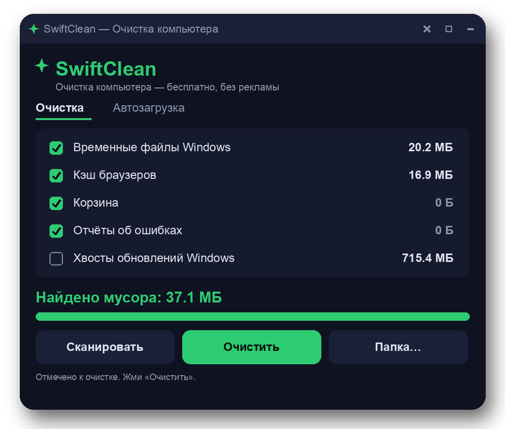

Your go-to pc junk remover for a cleaner, faster Windows experience.
Download PCJunkRemover.zipFree · MIT license · Windows 10/11 (64-bit) · ~15 MB

PC Junk Remover is a free Windows utility designed to optimize your system by effectively removing various types of unwanted files. This includes temporary files, browser caches, log files, and items in the Recycle Bin that accumulate over time. By utilizing this system junk cleaner, you can reclaim valuable disk space and enhance your PC's performance.
As a dedicated pc junk remover, it operates without any ads, bundles, or telemetry, ensuring a straightforward and safe experience. The simplicity and efficiency of this windows cleanup tool make it an essential addition to your system maintenance toolkit.
Efficiently delete unwanted temporary files.
Keep your browsing experience smooth by removing cached data.
Quickly clear the contents of your Recycle Bin.
Remove unnecessary log files to free up space.
Boost system performance by cleaning up junk files.
Simple and intuitive design for easy navigation.
No ads or telemetry, ensuring your privacy.
Fully transparent with an MIT license for community trust.
Yes, PC Junk Remover is completely free to use under the MIT license.
Yes, PC Junk Remover is compatible with both Windows 10 and Windows 11 (64-bit).
Admin rights are not required to run the PC Junk Remover, making it accessible for all users.
Absolutely. PC Junk Remover contains no ads, bundles, or telemetry, ensuring a safe user experience.
It removes temporary files, browser caches, log files, and items from the Recycle Bin.
For more releases and updates, visit our GitHub Releases page.
PC Junk Remover is open source and available on GitHub. You can freely contribute or modify the project under the MIT license.